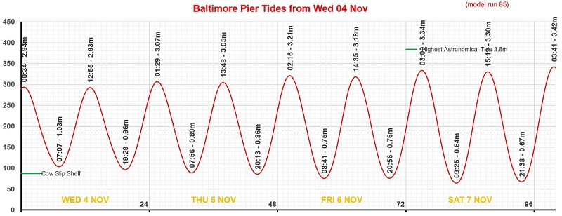
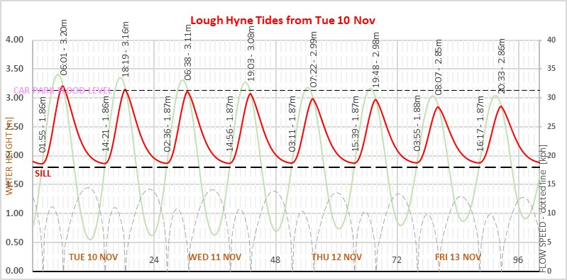
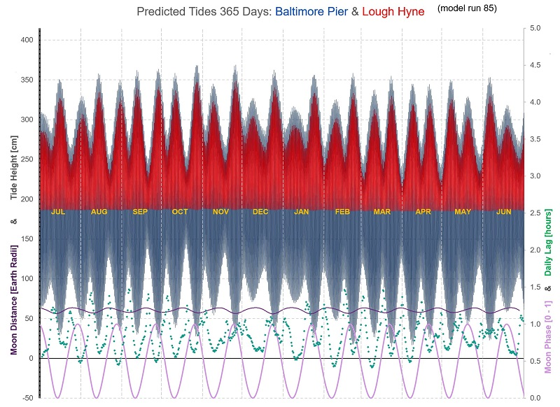
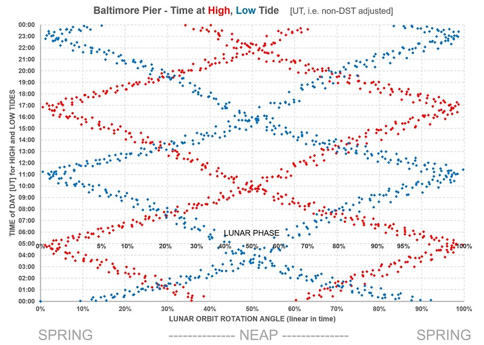
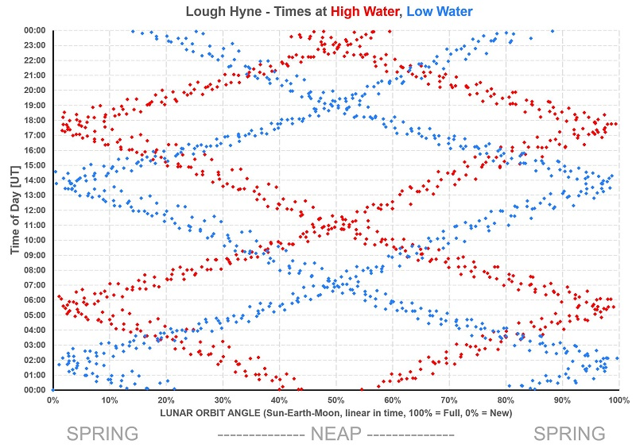

Predicted Tides at Baltimore Pier and Lough Hyne (plus 365-day chart and table)

(click on chart for higher-res images in new tab)

The Baltimore Pier tide predictions are computed by a mathematical model based on values derived from tide-height data collected at random times at Baltimore Pier since 2024. Sea-level
heights are established by photographing the steel ladders at the Pier, a useful measurement scale. Pressure is recorded too, since mean sea level
varies approximately 1cm for every unit of pressure.
The height and pressure data, combined with the prevailing astronomical positions of the Sun and Moon, allow one to solve for a set of harmonic constants (wave amplitudes and phase-lags)
for the multiple tidal constituents (M2, S2, N2, K2, M4 and many more), arriving at a “best fit” to the data collected.
These harmonic constants serve as a unique "fingerprint" of our tide at the Pier, and can be usefully used to predict. As more data gets collected, the more accurate
the model becomes.
The Lough Hyne predictions are produced by simulating, using channel-flow theory and the relative level of the outer sea tide as established above, the rate of flow entering or departing the
Lough and thus the incremental volume and, knowing the surface area, the rise or fall of Lough Hyne's water level.
You may notice that when refreshing from one day to the next, the time and height of, say, Tuesday’s predicted high tide changes slightly. That will most likely be a result of me
having collected some extra data-points from the Pier at Baltimore and re-calibrating the model with the new data. It will make the refreshed predictions slightly more accurate,
and will of course have a similar knock-on effect to the predictions for Lough Hyne.
Similarly, if you compare the full 365-day table of predictions with the front-page daily-refreshed ones, you’ll see that they may show slightly different predicted heights and
times. This is because I only update the full 365-day table occasionally for the latest data, so it will be working off a different version.
Full 365 Days of Tides
day by day data tabulated below

- main block of wavy data: each high and low through the year [scale in cm on LHS]
- upper slightly wavy purple line: Lunar distance from Earth [Earth Radii using LHS]
- green dots: extent, in hours, by which this tide exceeds previous tide minus 24 hours [RH scale]
- lowest pink oscillating line: Moon Phase [0-1 using RH scale i.e. 0-100%]
- air pressure assumed as standard atmospheric pressure at sea-level, i.e. 1013.25 hPa (aka millibars Mercury). Mean sea level
varies by ~1cm (0.01m) per hPa, so tide height should be adjusted up for pressures below 1013.25, and down for
pressures above (inverse barometer effect).
Other Whole-Year Charts plus Data:
2026
2027
2028
2029
2030
2031
others past or future, just ask.
High and Low Tide Times (UT i.e. no DST adjustment) plotted against Sun-Earth-Moon angle (& phase)

- Each red point represents a High Tide, and each blue is a Low Tide, for all the tides of 2026;
- Any year will have the same general pattern;
- x-values (rotation angle and phase) close to 0% and 100% represent New Moon and Full Moon respectively, i.e. Spring Tides;
- x-value close to 50% represents a Half Moon thus a Neap Tide;
- the chart shows, for example, that a Spring high tide will generally happen around or close to 5pm (6pm in summer);
- also, the Christmas Day swim. It takes place at midday, so from the chart, if it's high tide at that time it will always be at around 37% or 63% lunar rotation (Sun-Earth-Moon)
angle, close to Neap and necessarily therefore rather low. Whereas a low tide, should it happen then, will be close to a Spring Tide, hence very low. Or anything in
between, meaning water will never be very high for the Christmas Day swim.
Lough Hyne High and Low Tide Times (UT i.e. no DST adjustment) plotted against Sun-Earth-Moon angle (& phase)

- Same principle as above, except this chart is for Lough Hyne's tides
- As above, each red point represents a High Tide, and each blue is a Low, for all the tides of 2026;
- the pattern is similar to the ocean tide, but the high tides are shifted 1 to 1-1/2 hours "up" i.e. later; the (blue) low tides are shifted 3 to
3-1/2 hours up/later
- this chart shows, for example, that if you go swimming after a standard day's work at, say, 5:30-6:30pm (UT), if it's high tide it will be a Spring
high tide, and if it's low tide then it'll be very much a Neap low tide. In other words, you will encounter a flooded car park from time to time.
Whereas low tide levels at LH are not affected by Spring/Neap (because the Sill restricts its "lowness").
A Note About Accuracy
Based on the data collected at Baltimore Pier, this model has an average error (RMS) of 11.6 11.0cm 9.6cm 8.3cm. The paid-for App I have (WorldTides), corrected for
recorded pressure, etc, has an average error of 12.4cm .
The Lough Hyne predictions are driven by and based on the level of the sea outside the Lough, so any inaccuracy outside will shift the predicted times for
Lough Hyne too (but it won't necessarily affect the Baltimore-to-LH difference). For example air pressure: predictions are based on standard atmospheric pressure at sea level,
1013.25hPa. Actual pressure on any given day will be different, leading to higher tides in the event of lower pressure, and vice versa; and slightly different
high- and low-tide timings too: low pressure reduces the lag time from the outer sea tide, high pressure increases it.
The predictions nonetheless will be close enough to be useful, retaining the properties of the real tide behaviour. But the true beauty of such a model is its use as
an analytical tool. What is the relationship between intertidal time-lag (or Lough Hyne lag) and Moon Phase (i.e. Spring/Neap)? What is the pattern of the
time-of-day of high- and low-tide in relation to Moon Phase? Why is a Tide Clock necessarily rather inaccurate when not Full or New Moon? With this tool,
these questions are easily answered.
|